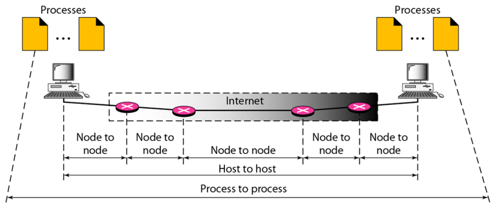
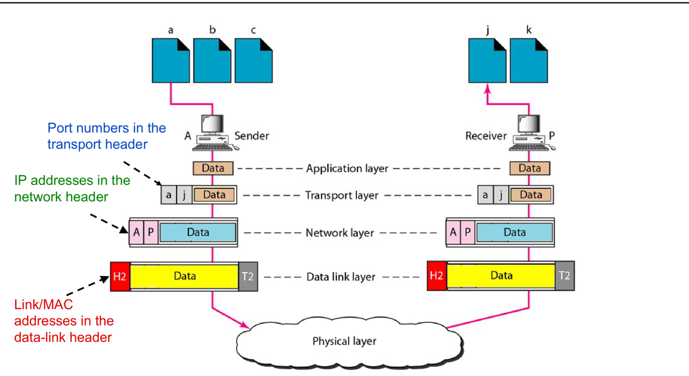
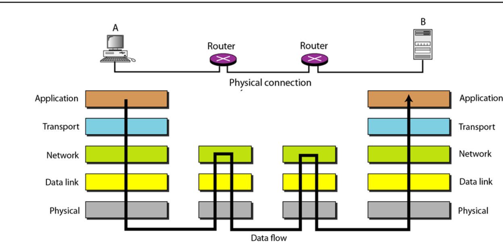
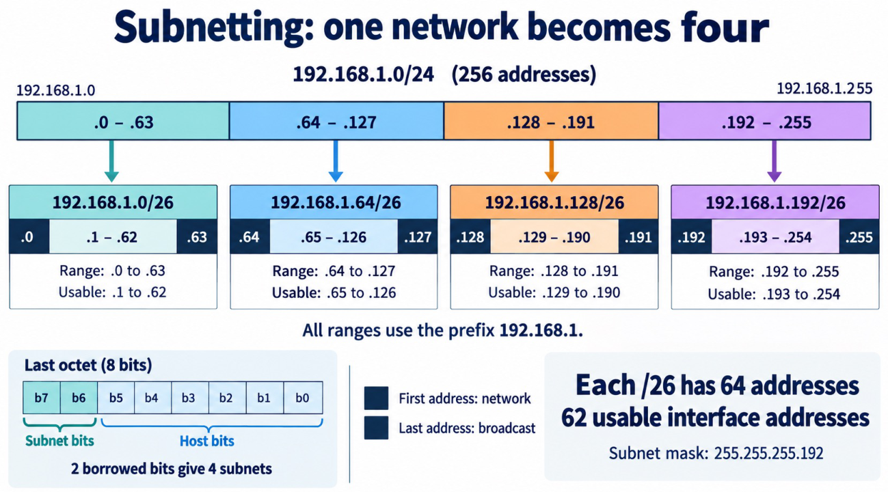
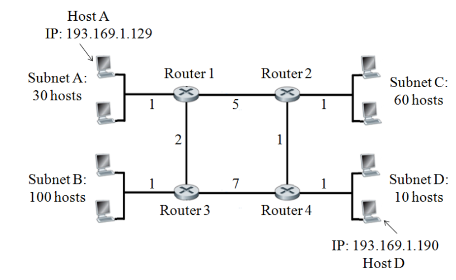
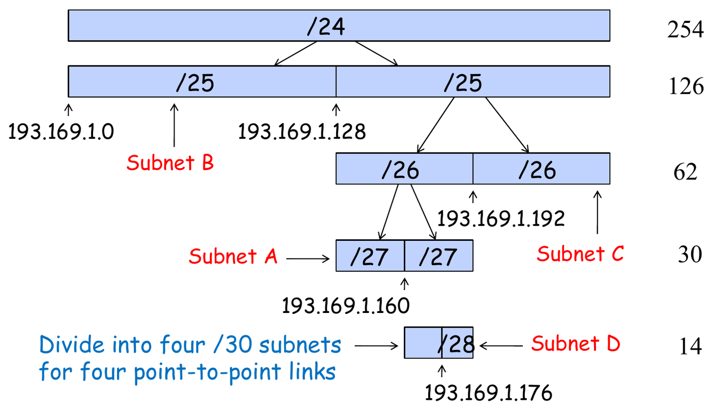
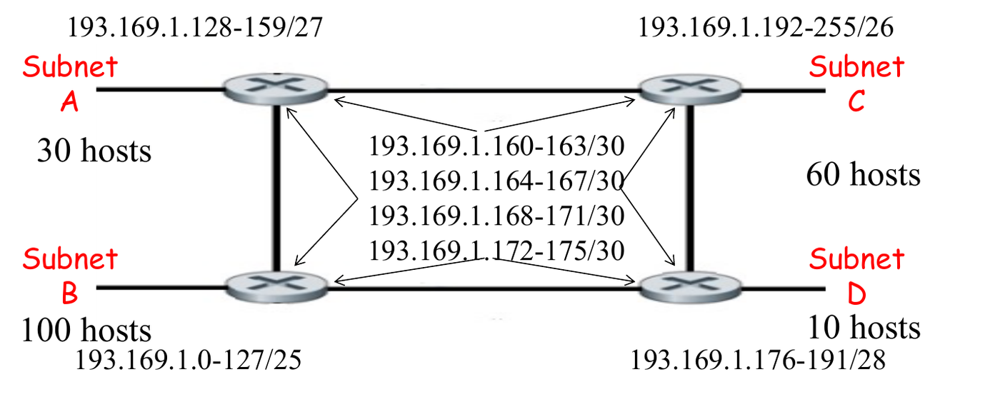
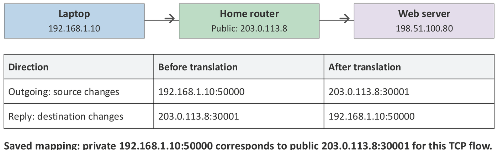
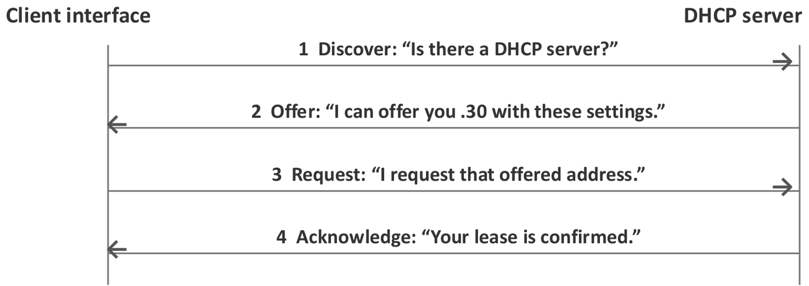
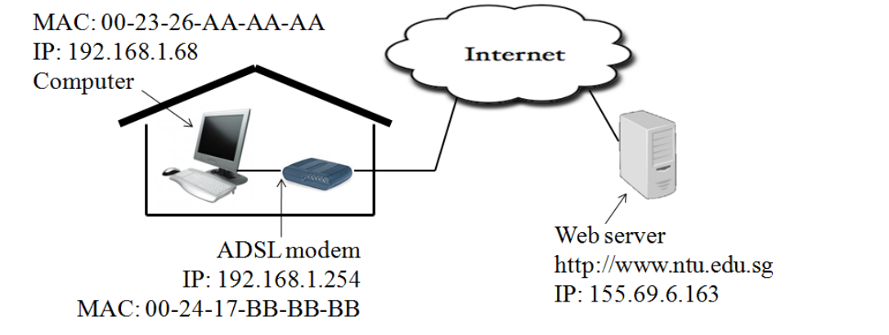

5. Network Layer: IP Addressing
This chapter starts Part II. It covers Part II Lecture 1 (overview), the first half of Lecture 2 (IP addressing and subnetting), and the “IP addressing in practice” session (IP settings, DHCP, NAT).
Part I showed how a frame crosses one link. Part II shows how data crosses many networks and reaches the right program on the right computer. This chapter answers one question: how does an address tell a router where to send a packet?
In the exam you will:
- find the network address, broadcast address and usable range from an address and a mask;
- choose subnet sizes and give each router interface an address (equal-size subnetting and VLSM);
- find the smallest subnet that holds two addresses, or one route that covers many networks;
- fill in a NAT or DHCP packet table, and explain what a home router does.
How to use this page. Each section teaches one idea in a few lines, then gives the questions on it, with a general method. Tutorial 2.1 has official solutions. Tutorial 2.3 has none, so its answer is unofficial. Concept checks and extensions are unofficial too. Past-year papers are not on this page: use the original papers.
Quick reference
| Topic | Rule |
|---|---|
| IPv4 address | 32 bits = 4 octets. It names an interface, not a computer. A router has one per interface. |
Mask /n |
ones, then zeros. Valid mask octets: 128, 192, 224, 240, 248, 252, 254, 255. |
| Block size | (mask value in the interesting octet). Blocks start at multiples of it. |
| Network / broadcast | Host bits all 0 / all 1. Usable , with = host bits. |
| Hosts to prefix | Count computers + every router interface. Smallest with count. Prefix . |
| Same subnet? | AND each address with the mask. Same result = same subnet. |
Subnetting /p to /q |
subnets, each with host bits. |
| VLSM order | Fixed blocks first, then largest first. Each block starts on a
multiple of its own size. Router links are /30. |
| Smallest subnet for two addresses | Write the first differing octet in binary. Prefix = bits before the first difference. |
| Aggregate route | Same method over many networks: the shared leading bits. |
| Classes | A 0… (0–127, /8) · B 10… (128–191, /16) ·
C 110… (192–223, /24) · D 1110… multicast · E
1111… reserved |
| Private blocks | 10.0.0.0/8 · 172.16.0.0/12 · 192.168.0.0/16 |
| NAPT | Out: private IP:port becomes public IP:new port. MAC addresses change on every link. |
| DHCP | Discover, Offer, Request, Acknowledge. The client sends Discover and Request from 0.0.0.0 to 255.255.255.255. |
| IPv6 | 128-bit addresses (IPv4 has 32). |
1. Three layers, three addresses
Part I covered the physical and data link layers. Part II covers the next three.
| Layer | Delivers | Address it uses | Size | Chapters |
|---|---|---|---|---|
| Data link | node to node (one link) | MAC address | 48 bits | Part I |
| Network | host to host (the whole path) | IP address | 32 bits (IPv4) | 5 to 8 |
| Transport | process to process | Port number | 16 bits | 9 |
A node is any device on the path. A host is an end computer. A process is a program running on a host. All three addresses sit in the packet at once: the port in the transport header, the IP address in the IP header, and the MAC address in the frame header.


The two hosts run all five layers. A router runs only the physical, data link and network layers. At each router, the network layer picks the next hop. Then the data link layer carries the packet over that one link.

The network layer delivers data from process to process.
False. The network layer delivers host to host. The transport layer delivers process to process, using port numbers.
A router runs all five layers.
False. A router runs the physical, data link and network layers only. It forwards packets and never reads the transport header.
What happens when you open a web page. Each step needs a different part of the course.
| Step | Problem | Solution |
|---|---|---|
| 1 | You typed a name, but routers need an address. | DNS (Chapter 10) |
| 2 | Which network does the address belong to? | IP addressing (this chapter) |
| 3 | Which way should the packet go at each router? | Routing (Chapters 6 to 8) |
| 4 | How does the packet cross each link? | Ethernet or Wi-Fi, joined to IP by ARP (Chapter 6) |
| 5 | Which program gets the data? | Port numbers (Chapter 9) |
| 6 | What if packets are lost or out of order? | TCP (Chapter 9) |
| 7 | What do browser and server say? | HTTP (Chapter 10) |
2. IP basics
IP (Internet Protocol) is the network-layer protocol of the Internet. An IP packet (or datagram) has two parts:
- the IP header: control information, including the source and destination IP addresses;
- the payload: the data after the header, for example a TCP segment.
An Ethernet frame carries the packet over one link. At each router the packet goes into a new frame for the next link.
IP is connectionless: it sends each datagram on its own, with no set-up. IP is also best effort: packets can be lost, delayed, duplicated or reordered, and IP never resends them. TCP, above IP, adds reliability.
The Internet Protocol (IP) provides a reliable service.
False. IP is best effort. It can lose, delay, duplicate or reorder packets, and it does not resend them. TCP adds reliability.
3. IPv4 addresses
The format
An IPv4 address is a 32-bit number given to a network interface (one Ethernet port, one Wi-Fi connection). We write it as four decimal numbers, one per byte (an octet, 0 to 255), with dots between them.
192 .168 .10 .77
11000000.10101000.00001010.01001101 (8 + 8 + 8 + 8 = 32 bits)A router has one IP address on each interface, and each address belongs to the subnet on that side.
Network part and host part
A MAC address is flat: it says who a device is, not where. If IP addresses were flat too, every router would need one table entry for every computer on Earth. So an IP address has two parts, like a phone number with a country code:
- the network prefix (the leading bits) names the network;
- the host part (the remaining bits) names the interface inside it.
Example: in 155.69.8.3, “155.69” names NTU and “8.3” names one machine. A router far away needs only one route for the whole NTU block.
Subnet, prefix and mask
- A subnet is a group of interfaces with the same network prefix. Hosts in one subnet talk directly, without a router.
- A subnet mask is a 32-bit value. Its leading 1s mark the prefix. Its trailing 0s mark the host bits. The 1s must be one unbroken run.
- Prefix notation writes
/nafter the address, where is the number of 1s in the mask.
| Prefix | Mask | Host bits | Total | Usable |
|---|---|---|---|---|
| /8 | 255.0.0.0 | 24 | 16 777 216 | 16 777 214 |
| /16 | 255.255.0.0 | 16 | 65 536 | 65 534 |
| /20 | 255.255.240.0 | 12 | 4 096 | 4 094 |
| /22 | 255.255.252.0 | 10 | 1 024 | 1 022 |
| /23 | 255.255.254.0 | 9 | 512 | 510 |
| /24 | 255.255.255.0 | 8 | 256 | 254 |
| /25 | 255.255.255.128 | 7 | 128 | 126 |
| /26 | 255.255.255.192 | 6 | 64 | 62 |
| /27 | 255.255.255.224 | 5 | 32 | 30 |
| /28 | 255.255.255.240 | 4 | 16 | 14 |
| /29 | 255.255.255.248 | 3 | 8 | 6 |
| /30 | 255.255.255.252 | 2 | 4 | 2 |
Learn the mask octets: 128, 192, 224, 240, 248, 252, 254, 255. Each one adds the next bit (128, +64, +32, +16, +8, +4, +2, +1).
255.255.253.0 is a valid subnet mask.
False. 253 is 11111101. A 0 comes
before a 1, so the 1s are not one unbroken run.
Network, broadcast and usable addresses
With host bits:
- Network address: all host bits 0. First address of the block. It names the subnet.
- Broadcast address: all host bits 1. Last address of the block. It means “every host on this subnet”.
- Usable addresses: everything in between.
Always count the router interface. A LAN with 62 computers and 1 gateway needs 63 usable addresses. A /26 has only 62, so you need a /25.
A /24 subnet can hold 256 hosts.
False. A /24 has 256 addresses, but the network and broadcast addresses are not for hosts. It holds 254 interfaces, and a router interface is one of them.
CIDR and the old classes
CIDR (Classless Inter-Domain Routing) allows any prefix length. Use the prefix or mask that the question gives. Do not guess the boundary from the first number.
The old classful system fixed the boundary from the first bits. You still need to recognise the classes.
| Class | Leading bits | First octet | Network bits | Hosts per network |
|---|---|---|---|---|
| A | 0 | 0–127 | 8 | |
| B | 10 | 128–191 | 16 | |
| C | 110 | 192–223 | 24 | |
| D | 1110 | 224–239 | — | multicast |
| E | 1111 | 240–255 | — | reserved |
Example: 152.73.184.68 starts with 152, which is in 128–191, so it is Class B.
A Class B address starts with the bits 110 and has a 24-bit network part.
False. Class B starts with 10 and has a 16-bit network part. “110” and 24 bits describe Class C.
4. From an address to its subnet
The question: given an address and a mask, which block is the address in?
Fast method (block size). The mask cuts the address space into equal blocks that start on multiples of the block size.
- Find the interesting octet: the one octet where the mask is neither 255 nor 0.
- Block size (mask value in that octet).
- List the block starts Find the block that holds the address.
- Network = the start of that block, with 0 in later octets. Broadcast = the next start , with 255 in later octets.
| Address | Mask octet | Block size | Block | Network | Broadcast |
|---|---|---|---|---|---|
| 192.168.10.77/26 | 192 (4th) | 64 | 64–127 | 192.168.10.64 | 192.168.10.127 |
| 10.0.5.94/27 | 224 (4th) | 32 | 64–95 | 10.0.5.64 | 10.0.5.95 |
| 172.20.142.98/22 | 252 (3rd) | 4 | 140–143 | 172.20.140.0 | 172.20.143.255 |
Full method (bitwise AND). . Every other pair gives 0. So address AND mask keeps the prefix and sets every host bit to 0. The result is the network address.
For 192.168.10.77/26: the last mask octet is 192.
01001101 (77) AND 11000000 (192) =
01000000 = 64. The network is 192.168.10.64/26.
Same subnet? AND each address with the mask and compare. With 192.168.10.77/26, the address .126 gives .64 (same, so local). The address .130 gives .128 (different, so remote).
Close is not local. 10.0.5.96 is not in 10.0.5.64/27. It starts the next block. And an address that ends in .0 is not always a network address: in 150.10.100.0/19 the block is .96.0 to .127.255, so .100.0 is an ordinary host.
Tutorial 2.1 Q2. An organization is assigned a /16 IP address block. The organization has created several subnets for its network. It is known that one of the subnets is 145.32.128.0/255.255.224.0. What is the broadcast address for this subnet?
Answer
The mask 255.255.224.0 has 19 ones, so the subnet is a /19. The interesting octet is the 3rd.
In binary, the 3rd octet of the subnet is 10000000 and
the mask is 11100000. The first 3 bits (100)
are the prefix. The other 5 bits and the whole 4th octet are host bits.
Set every host bit to 1: 145.32.10011111.11111111.
Broadcast address = 145.32.159.255.
Check: . The block starts at 128 and ends at . ✓
General method: from an address and a mask to the whole range
- Turn
/ninto a mask, or read the mask. Find the interesting octet. - mask value there.
- The network octet is the multiple of at or below the address octet. Later octets are 0.
- The broadcast octet is the network octet . Later octets are 255.
- Usable = network to broadcast . The count is .
- If the question gives a network address, check that its octet is a multiple of . If not, it is not a network address.
Extension 2.1. A host is configured as 172.16.77.200/18. Find the mask, the network address, the broadcast address, the usable range and the number of usable addresses.
Answer (Extension 2.1)
/18 means 18 ones, so the mask is 255.255.192.0. The interesting octet is the 3rd, with . The block starts are 0, 64, 128, 192, and 77 is in 64–127.
- Network: 172.16.64.0/18
- Broadcast: 172.16.127.255
- Usable: 172.16.64.1 to 172.16.127.254, which is addresses.
Check: . ✓
5. Equal-size subnetting
The question: how do I cut one block into smaller blocks of the same size?
Subnetting divides a parent block into non-overlapping child blocks by making the prefix longer. Going from / to / uses extra bits to number the children. So the parent holds children, each with host bits. More subnets means fewer addresses in each one. The total does not grow.

Method. Two things must both fit: the largest subnet, and the number of subnets (include future ones). Size first, then count.
- Interfaces needed = hosts + 1 for the router.
- Smallest with interfaces. Prefix .
- Count check: the number of subnets.
If the count check fails, you need a bigger parent or subnets of different sizes (Section 6).
Lecture example. Parent 10.20.0.0/20. There are 6 departments, each with up to 300 computers and 1 gateway.
- Size: 301 interfaces. , so and the prefix is /23.
- Count: bits give subnets. ✓
- The 3rd octet goes up by each time.
| Use | Subnets |
|---|---|
| Departments 1 to 6 | 10.20.0.0/23, 10.20.2.0, 10.20.4.0, 10.20.6.0, 10.20.8.0, 10.20.10.0 |
| Reserved | 10.20.12.0/23 and 10.20.14.0/23 |
6. VLSM: subnets of different sizes
The question: what if the LANs have very different sizes?
VLSM (Variable-Length Subnet Masking) gives each segment its own prefix. A big LAN gets a big block. A link between two routers needs only 2 addresses, so it gets a /30.
Method.
- List every segment that needs a subnet: every LAN and every router-to-router link.
- Size each one (hosts + router interfaces) and choose the smallest prefix.
- Check the total. The block sizes must add up to no more than the parent.
- Place fixed blocks first. If the question names a host address, the subnet must contain it. A block already in use is fixed too.
- Then largest first. Each block must start on a multiple of its own size. This leaves no unusable gaps.
- Give each router interface a usable address in its subnet. Both ends of a /30 take the two usable addresses. Skip any address a host already has.
- Check: enough capacity, aligned, no overlap, every address unique.
If the total does not fit, re-read what the host counts include. One extra address can double a block. State your assumption.
Lecture example. Parent 192.168.50.0/24. LAN A has 100 computers, LAN B 50, LAN C 20, LAN D 10. Each LAN also needs one gateway. Four routers R1–R4 are joined by four links.
| Segment | Needs | Prefix | Subnet | Usable | Router interface |
|---|---|---|---|---|---|
| LAN A | 101 | /25 | 192.168.50.0/25 | .1 – .126 | R1: .1 |
| LAN B | 51 | /26 | .128/26 | .129 – .190 | R2: .129 |
| LAN C | 21 | /27 | .192/27 | .193 – .222 | R3: .193 |
| LAN D | 11 | /28 | .224/28 | .225 – .238 | R4: .225 |
| R1–R2 | 2 | /30 | .240/30 | .241 – .242 | R1 .241, R2 .242 |
| R1–R3 | 2 | /30 | .244/30 | .245 – .246 | R1 .245, R3 .246 |
| R2–R4 | 2 | /30 | .248/30 | .249 – .250 | R2 .249, R4 .250 |
| R3–R4 | 2 | /30 | .252/30 | .253 – .254 | R3 .253, R4 .254 |
Total: . It fits exactly.
Two sizes in one parent: Tutorial 2.1 Q1
Tutorial 2.1 Q1. A university has been allocated the 155.69.0.0/16 address block. As the network administrator of the university, you have been asked to subnet the network. There are presently 10 schools in the university, and it may increase to 15 over the next few years. Currently, each school has a maximum number of host stations of 2000, but three schools are growing and may have 4000 hosts in a couple of years later. Determine the subnet address/subnet mask for each school.
Answer
Plan for the 15 schools of the future: 3 schools with 4000 hosts and 12 with 2000.
Sizes.
- 4000 + 1 router = 4001. , so the prefix is /20. Mask 255.255.240.0.
- 2000 + 1 = 2001. , so the prefix is /21. Mask 255.255.248.0.
Fit. Count in units of /21. A /16 holds 32 of them. A /20 is 2 units. The plan needs , so it fits. 7 blocks of /20 stay free.
Placement. Big blocks first. The 3rd octet moves by 16 for a /20 and by 8 for a /21.
| Schools | Subnets | Mask |
|---|---|---|
| 1–3 (4000 hosts) | 155.69.0.0/20, 155.69.16.0/20, 155.69.32.0/20 | 255.255.240.0 |
| 4–15 (2000 hosts) | 155.69.48.0/21, .56.0, .64.0, .72.0, .80.0, .88.0, .96.0, .104.0, .112.0, .120.0, .128.0, .136.0 (all /21) | 255.255.248.0 |
| Free | 155.69.144.0 to 155.69.255.255 |
The official slide places its blocks elsewhere. Any aligned blocks that do not overlap are correct.
Check: the last /21 starts at and ends at 143.255. The free space starts at 144.0. ✓
General method: two or more subnet sizes in one parent block
- Plan for the future count, not the present one.
- Find the prefix for each size (hosts + router interface).
- Measure every block in units of the smallest prefix. Add the units and compare with the parent.
- Place the biggest blocks first, each on a multiple of its own size. Then place the smaller ones.
- Write the free space as aligned blocks.
LANs and router links in one /24: Tutorial 2.1 Q3
Tutorial 2.1 Q3. Figure Q3 shows a network consisting of four subnets being interconnected by four routers. The integer on each link indicates the cost of that link. As a network engineer, you are allocated the IP address range 193.169.1.0/24 to support the network. Assign suitable IP address/subnet mask to each interface of the routers.

Clarification for Q3 (this question only): “hosts” in Figure Q3 means the number of IP addresses each LAN needs, including the address for its router interface. For example, Subnet A’s “30 hosts” means 29 end hosts plus 1 router interface. Do not add another address for the router.
Answer
Step 1: sizes. There are four LANs and four router links. The link costs are for routing (Chapter 7), so ignore them here.
| Segment | Addresses | Prefix | Block size |
|---|---|---|---|
| Subnet A | 30 | /27 (30 usable) | 32 |
| Subnet B | 100 | /25 (126 usable) | 128 |
| Subnet C | 60 | /26 (62 usable) | 64 |
| Subnet D | 10 | /28 (14 usable) | 16 |
| 4 links | 2 each | /30 | 4 each |
Total . It fits the /24 exactly.
Step 2: fixed blocks first. The two host addresses pin two subnets.
- Host A is .129, so Subnet A is the /27 that holds it: 193.169.1.128/27 (.128–.159).
- Host D is .190, so Subnet D is the /28 that holds it: 193.169.1.176/28 (.176–.191).
Step 3: the rest.
- Subnet B needs a /25. The upper /25 (.128–.255) holds A and D, so B is 193.169.1.0/25.
- Subnet C needs a /26. The only free aligned /26 is 193.169.1.192/26.
- The four /30 links share what is left, .160–.175: .160/30, .164/30, .168/30, .172/30.


Step 4: interface addresses. The slide does not match the /30 blocks to links. This table makes one choice (unofficial).
| Router | Interface | Address / mask |
|---|---|---|
| Router 1 | to Subnet A | 193.169.1.158/27 (not .129, Host A uses it) |
| Router 1 | to Router 2 | 193.169.1.161/30 |
| Router 1 | to Router 3 | 193.169.1.165/30 |
| Router 2 | to Subnet C | 193.169.1.193/26 |
| Router 2 | to Router 1 | 193.169.1.162/30 |
| Router 2 | to Router 4 | 193.169.1.169/30 |
| Router 3 | to Subnet B | 193.169.1.1/25 |
| Router 3 | to Router 1 | 193.169.1.166/30 |
| Router 3 | to Router 4 | 193.169.1.173/30 |
| Router 4 | to Subnet D | 193.169.1.177/28 (not .190, Host D uses it) |
| Router 4 | to Router 2 | 193.169.1.170/30 |
| Router 4 | to Router 3 | 193.169.1.174/30 |
The link blocks are R1–R2 = .160/30, R1–R3 = .164/30, R2–R4 = .168/30, R3–R4 = .172/30.
Check: every address is inside its subnet, no blocks overlap, and no router address equals a host address. ✓
General method: a network of LANs and router links in one block
- List the segments: one per LAN, one per router link. Ignore link costs.
- Size each one and add the block sizes. Stop if the total is more than the parent.
- Fixed addresses first. Place the block that holds each given host address. Largest-first alone would put C at .128/26 and break Host A.
- Largest first for the rest, each block on a multiple of its own size.
- Give each router interface an address in its subnet, skipping any host address. Both ends of a /30 take the two usable addresses.
- Check each address against its block.
Extension 3.1. Remove the clarification of Q3. Now “30 hosts” means 30 computers, and each LAN also needs one router interface. Do the four LANs and four links still fit in 193.169.1.0/24?
Answer (Extension 3.1)
The sizes become 31, 101, 61 and 11 interfaces.
| Segment | Interfaces | Prefix | Block size |
|---|---|---|---|
| Subnet A | 31 | /26 (62 usable) | 64 |
| Subnet B | 101 | /25 | 128 |
| Subnet C | 61 | /26 | 64 |
| Subnet D | 11 | /28 | 16 |
| 4 links | 2 each | /30 | 16 in total |
Total . It does not fit. One extra address for Subnet A moves it from a /27 to a /26 and the plan overflows. This is why the question states the clarification.
Extension 3.2. The parent is 10.1.1.0/24. Each count below already includes the router interface. LAN P needs 100 addresses, LAN Q needs 40 and LAN R needs 20. Two router links need a /30 each. A server in LAN R must keep the address 10.1.1.40. Allocate the subnets and give the router interfaces.
Answer (Extension 3.2)
Sizes. P: /25 (128). Q: /26 (64). R: /27 (32). Two links: 8 in total. Total . It fits.
Placement.
- Fixed block first. R’s /27 must hold .40, so R is 10.1.1.32/27 (.32–.63).
- P needs a /25. The lower /25 holds R, so P is 10.1.1.128/25.
- Q needs a /26. The block .0/26 holds R. The next one is free, so Q is 10.1.1.64/26.
- The links use the space left, .0–.31: 10.1.1.0/30 and 10.1.1.4/30.
Plain “largest first” would put P at .0/25, and the server’s .40 would land in P.
| Interface | Address / mask |
|---|---|
| Router on LAN P | 10.1.1.129/25 |
| Router on LAN Q | 10.1.1.65/26 |
| Router on LAN R | 10.1.1.33/27 (not .40, the server uses it) |
| Link 1 | 10.1.1.1/30 and 10.1.1.2/30 |
| Link 2 | 10.1.1.5/30 and 10.1.1.6/30 |
7. Smallest subnet for two addresses, and route aggregation
The question: which one block holds these addresses?
Write the first octet where the addresses differ in binary. Count the leading bits that all of them share. The prefix is 8 for each full octet before it, plus the shared bits in that octet.
Extension 7.1. Find the smallest subnet (longest prefix) that holds both addresses, and give its mask. (a) 20.30.150.10 and 20.30.158.5. (b) 60.1.130.4 and 60.1.20.9.
Answer (Extension 7.1)
(a) The first two octets match: 16 bits. The 3rd octet differs:
150 = 1001 0110
158 = 1001 1110
1001 → 4 bits matchThe prefix is . The mask is 255.255.240.0. The subnet is 150 AND 240 = 144, so 20.30.144.0/20.
(b) and . They differ at the first bit, so the prefix is /16, the mask is 255.255.0.0, and the subnet is 60.1.0.0/16.
Check (a): 20.30.144.0/20 covers 144–159, and 150 and 158 are inside. ✓
Route aggregation. A router can replace many routes with one shorter prefix that covers them all. This makes the routing table smaller. The method is the same, applied to many networks.
Extension 7.2. A router has routes to 10.5.72.0/24, 10.5.73.0/24, 10.5.74.0/24, 10.5.75.0/24 and 10.5.78.0/24. Find one aggregate route. Does it cover any address that is not in the list?
Answer (Extension 7.2)
Only the 3rd octet changes:
72 = 0100 1000
73 = 0100 1001
74 = 0100 1010
75 = 0100 1011
78 = 0100 1110
^^^^ ^ 5 shared bitsThe prefix is . The aggregate route is 10.5.72.0/21, which covers 10.5.72.0 to 10.5.79.255.
It also covers the networks 76, 77 and 79, which were not in the list. An aggregate always covers a whole aligned block. This is fine if those addresses are unused or go the same way. If not, the router needs more specific routes for them, and longest-prefix match (Chapter 6) picks those first.
Check: , and 72 is a multiple of 8. ✓
8. Private addresses and NAT
The question: IPv4 has too few addresses. How do millions of homes share them?
IPv4 has only billion addresses. There are two fixes: private addresses with NAT (used in almost every home), and IPv6 with 128-bit addresses.
IPv6 doubles the address space of IPv4.
False. IPv6 addresses have 128 bits, against 32. That is times as many addresses, not twice as many.
Private blocks
| Block | Range | Typical use |
|---|---|---|
| 10.0.0.0/8 | 10.0.0.0 – 10.255.255.255 | Organisations |
| 172.16.0.0/12 | 172.16.0.0 – 172.31.255.255 | Organisations |
| 192.168.0.0/16 | 192.168.0.0 – 192.168.255.255 | Home routers |
Many separate networks reuse these addresses. The public Internet does not route them. “Private” does not mean “same subnet”: the mask decides that.
Ports and NAPT
A port number (16 bits, in the transport header)
names the program on a host. IP:port names
one end of a connection, for example 192.168.1.10:50000. A
web server uses a well-known port (80 for HTTP, 443 for HTTPS). The
client’s operating system picks a temporary source port for each
connection.
- NAT (Network Address Translation): a router changes the IP addresses of packets that cross between a private network and the Internet.
- NAPT (Network Address and Port Translation), also called PAT: the router also changes the port. Many private hosts can then share one public IP address.
The router keeps a translation table:
- Outgoing packet: it changes the source private IP:port to its public IP:new port, and saves the mapping.
- Reply: it looks up the mapping and changes the destination back to the private IP:port.

Two hosts can use the same source port. The different public ports tell their connections apart.
| Inside | After NAPT (public 203.0.113.5) | Reply goes back to |
|---|---|---|
| 10.0.0.10:50000 | 203.0.113.5:61001 | 10.0.0.10:50000 |
| 10.0.0.20:50000 | 203.0.113.5:61002 | 10.0.0.20:50000 |
- CGNAT (carrier-grade NAT): the ISP runs a second NAT, so many customers share one public address. The home router’s ISP side then has an address in 100.64.0.0/10, a shared range that is neither public nor private.
- Port forwarding: an outside host cannot start a connection to a private server, because no mapping exists yet. A forwarding rule creates a fixed mapping, for example public 203.0.113.5:443 → 192.168.40.25:443. With CGNAT, a home rule alone is not enough.
The public Internet routes packets to private addresses such as 192.168.1.10.
False. Private addresses are for use inside one network, and many networks reuse them. A NAT router changes them to a public address at the edge.
With NAPT, the MAC addresses in a packet stay the same from the private host to the server.
False. MAC addresses change on every link, because each frame goes from one interface to the next on that link. The IP addresses and ports change only at the NAT router.
Extension E1. Fill in the header table. Host A
(private 192.168.5.20, MAC MAC-A) opens a connection from
port 51000 to server B (203.0.113.80, MAC MAC-B) on port
443. Router R does NAPT with public address 198.51.100.7. R’s MAC is
MAC-R1 on A’s side and MAC-R2 on B’s side. R
maps the connection to public port 62001. P1 and P2 are the request. P3
and P4 are the reply. Fill in the MAC, IP and port fields of each
packet.
Answer (E1)
| P1 (A → R) | P2 (R → B) | P3 (B → R) | P4 (R → A) | |
|---|---|---|---|---|
| Dest. MAC | MAC-R1 | MAC-B | MAC-R2 | MAC-A |
| Source MAC | MAC-A | MAC-R2 | MAC-B | MAC-R1 |
| Source IP | 192.168.5.20 | 198.51.100.7 | 203.0.113.80 | 203.0.113.80 |
| Dest. IP | 203.0.113.80 | 203.0.113.80 | 198.51.100.7 | 192.168.5.20 |
| Source port | 51000 | 62001 | 443 | 443 |
| Dest. port | 443 | 443 | 62001 | 51000 |
- The MAC addresses change on every link. In P1, A sends to the router’s MAC, not B’s, because B is not on A’s link.
- The bold cells are the ones R changes. B never sees A’s private address. B replies to 198.51.100.7:62001.
- R looks up port 62001 in its table and changes the reply’s destination back to 192.168.5.20:51000.
General method: tracing a packet through NAPT
- Draw one column per link crossing: the request on each side of the router, then the reply on each side.
- MACs: source = the interface that sends on this link. Destination = the next interface on this link. Never the far end, unless it is on this link.
- Private side: the host’s private IP:port and the server’s IP:port.
- Public side: the router’s public IP and the translated port replace the source on the request. The reply uses them as the destination.
- The reply swaps source and destination, and the router undoes the translation.
9. Getting IP settings: static or DHCP
The question: how does a host learn its address?
A host needs five settings.
| Setting | Example | Role |
|---|---|---|
| IPv4 address | 192.168.1.68 | This interface’s address |
| Subnet mask | 255.255.255.0 | Defines the local subnet (/24) |
| Default gateway | 192.168.1.254 | The router for any destination that is not local |
| DNS server | 192.168.1.254 | Changes names into IP addresses |
| DHCP server | 192.168.1.254 | Gave the host its settings |
You can type them in (static) or get them automatically with DHCP.
DHCP
DHCP (Dynamic Host Configuration Protocol) gives a host its address, mask, gateway and DNS server. An administrator sets up a pool of addresses, for example .30–.50. The pool is only part of the subnet. A printer at a fixed .20 outside the pool is still valid. The host gets the address on a lease (for example 8 hours) and can renew it.
The problem: the host has no address yet, so how can it talk? It uses four messages, DORA.

- Discover: the client broadcasts “Is there a DHCP server?”
- Offer: the server offers an address and the settings.
- Request: the client asks for the offered address.
- Acknowledge: the server confirms the lease.
Routers do not forward a local broadcast. To reach a server on another LAN, a DHCP relay passes the messages on.
Suppose the server is 10.0.0.1 and offers 10.0.0.50. If the server replies by unicast:
| # | Source IP | Destination IP | Message |
|---|---|---|---|
| 1 | 0.0.0.0 | 255.255.255.255 | Discover |
| 2 | 10.0.0.1 | 10.0.0.50 | Offer |
| 3 | 0.0.0.0 | 255.255.255.255 | Request |
| 4 | 10.0.0.1 | 10.0.0.50 | Acknowledge |
The client sends both its messages from 0.0.0.0, because it owns no address until the ACK. Some servers broadcast the Offer and ACK instead. Use whichever the question states.
A DHCP Request is sent from the address that the server offered.
False. The client does not own the offered address until the ACK arrives. It sends the Request from 0.0.0.0 to 255.255.255.255.
What the home router does: Tutorial 2.3 Q3
Tutorial 2.3 Q3. A user subscribes to an ISP home
broadband service and connects his computer directly to it via an ADSL
modem as shown in Figure Q3a. An extract of the output by the
ipconfig command issued on the computer is shown in Figure
Q3b.
Based on Figure Q3a and Q3b, deduce the roles performed by the ADSL modem, and briefly describe the purpose of each role.
The user launches his web browser and requests for the default web page at http://www.ntu.edu.sg without the use of web proxy. Assume that all the caches of the computer are initially empty. Using a table similar to Table Q3, list the sequence of frames being sent and received by the computer until the first frame containing the requested web page is received.
Part (b) needs the application layer (HTTP and DNS). It is answered in Chapter 10, section 6.3. Only part (a) is answered here.

c:\>ipconfig /all
Ethernet adapter Local Area Connection:
Physical Address . . . . . . . . . . . : 00-23-26-AA-AA-AA
DHCP Enabled . . . . . . . . . . . . : Yes
IPv4 Address . . . . . . . . . . . . . . : 192.168.1.68
Subnet Mask . . . . . . . . . . . . . . : 255.255.255.0
Default Gateway . . . . . . . . . . . : 192.168.1.254
DHCP Server . . . . . . . . . . . . . : 192.168.1.254
DNS Server . . . . . . . . . . . . . . . : 192.168.1.254Answer (a), unofficial: no solution was released
The computer lists the modem’s address, 192.168.1.254, for three settings. Each one shows a role:
- Default gateway. The computer sends every packet for a destination outside 192.168.1.0/24 to the modem. So the modem is the router between the home LAN and the ISP.
- DHCP server. “DHCP Enabled: Yes” and the DHCP server 192.168.1.254 show that the modem gave the computer its address, mask, gateway and DNS server.
- DNS server. The computer asks the modem to change names into IP addresses. The modem answers, or passes the question to the ISP’s DNS server (a proxy).
Two more roles follow from the figure and the address:
- NAT. 192.168.1.68 is a private address, and the Internet does not route it. The modem must change it to the public address from the ISP, so the web server can reply.
- Modem. It sends the bits over the ADSL line to the ISP, and turns the ISP’s signal back into bits for the home.
General method: reading an ipconfig output
- Put the address and mask side by side. They give the local subnet (here 192.168.1.0/24).
- If the gateway, DHCP server and DNS server are the same address, one box does all three jobs.
- If the host address is private, a NAT router must sit between it and the Internet.
- If the box also connects to the ISP over a phone line (ADSL), it also has the modem role.
- For each role, give one sentence on its purpose.
Why have subnets at all?
- To organise addresses: each department gets a block, with room to grow.
- To limit broadcasts: an ARP broadcast stays on its own LAN.
- To apply access rules: traffic between subnets passes a router, where rules can allow or deny it.
Putting two departments on separate subnets stops them from talking to each other.
False. With working routes, separate subnets can talk through the router. To restrict access, you need access-control rules on a router or firewall.
Exam patterns
Tutorial sources: Tutorial 2.1 Q1 (two subnet sizes), Q2 (broadcast address), Q3 (LANs and router links, with fixed hosts); Tutorial 2.3 Q3a (home router roles). The other patterns come from the lecture’s examples. Past-year papers are not on this page.
| Question type | How to attack it | Trap |
|---|---|---|
| Network, broadcast, usable range | Block size in the interesting octet, then the block that holds the address | Treating .0 as always a network address. Wrong octet for the mask. |
| Same subnet, or list of members | AND with the mask, or test each octet against the block | Checking only the interesting octet. Trusting numbers that are close. |
| Prefix for N hosts | Add the router interface, then smallest with | Forgetting the router. Using instead of . |
| Equal-size subnets | Size first, then check the count with | Checking only one of the two |
| VLSM with LANs and links | Size all, check the total, fixed blocks first, largest first, /30 for links | Largest-first before the fixed host. Forgetting the links. An unaligned block. |
| Assign router interfaces | Both ends of a /30 take the two usable addresses. Skip host addresses. | Using the network or broadcast address. Using a host’s address. |
| Smallest subnet for two addresses, or aggregate route | Shared leading bits in the first octet that differs | Counting bits from the wrong octet. Forgetting that the whole block is covered. |
| NAPT header table | One column per link. MACs change every link. IP and port change at the router. | Using the server’s MAC on the first link |
| DHCP messages | Discover and Request: 0.0.0.0 → 255.255.255.255 | Giving the client the offered address too early |
| Home router roles | Same address for gateway, DHCP and DNS = one box. Private address = NAT. | Naming only “router” and “modem” |
| True/false | IP is best effort. Class B starts with 10. IPv6 is 128 bits. Private is not routed. | See Common Traps |
Common Traps
- Block size first. Write the mask in decimal and find the block size before anything else.
- Network = host bits 0. Broadcast = host bits 1. Usable .
- .0 and .255 prove nothing. Only the mask says which address is the network or broadcast.
- Count the router interface in every LAN, unless the question says the count already includes it.
- Align every block. A network address must be a multiple of its block size. 172.16.112.0/19 is not a valid block.
- Close is not local. AND each address with the mask.
- Use the given prefix. Never guess it from the first octet. Class B starts with bits 10 and has a 16-bit network part.
- VLSM order: fixed blocks first, then largest first, every block aligned, /30 for router links. Check that the total fits before you allocate.
- Router address clashes. A router interface must not take a host’s address.
- Aggregation covers the whole block, including networks that were not in your list.
- NAT: MAC addresses change on every link. The IP and port change only at the NAT router.
- IPv6 has 128 bits, four times the bits of IPv4, not double the addresses.
- Private addresses are not routed on the Internet. “Private” does not mean “same subnet”.
- DHCP: Discover and Request go 0.0.0.0 → 255.255.255.255.
- IP is best effort, not reliable.
- Subnets do not block traffic on their own. Access rules on a router or firewall do.